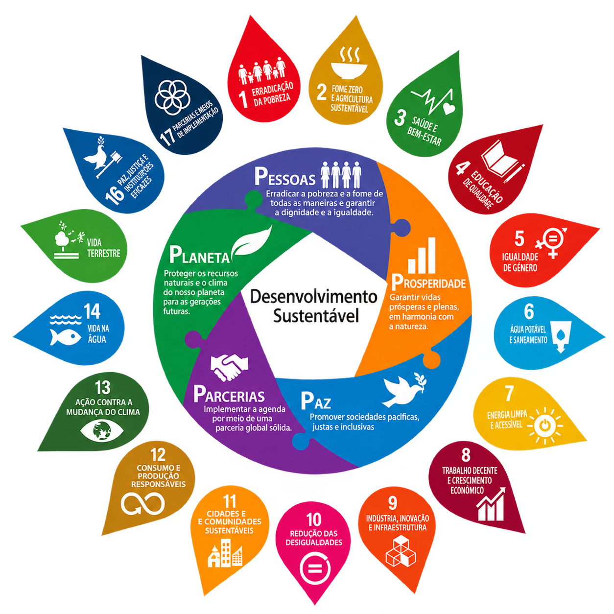
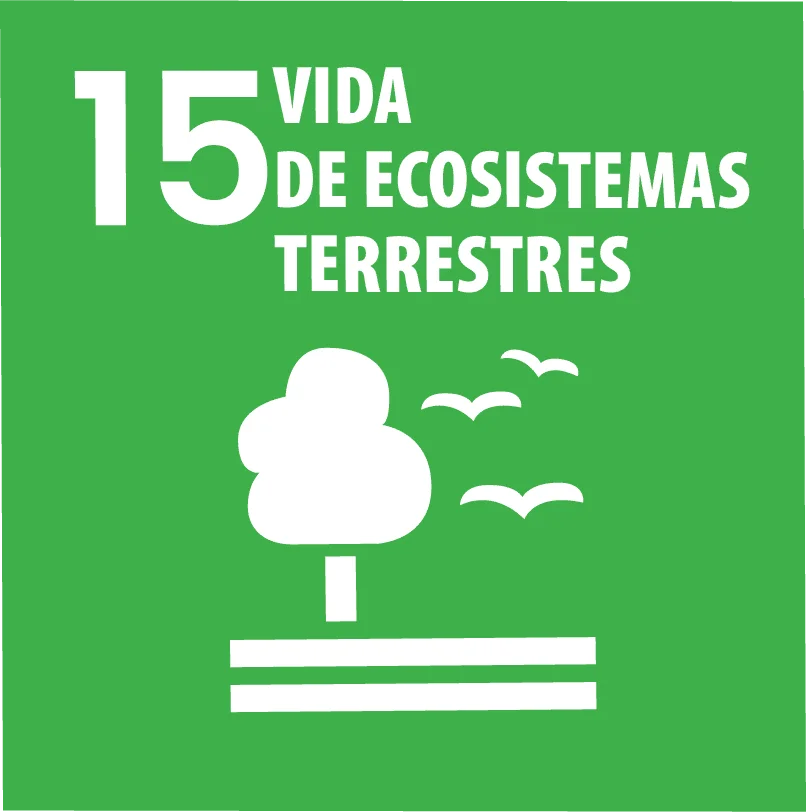
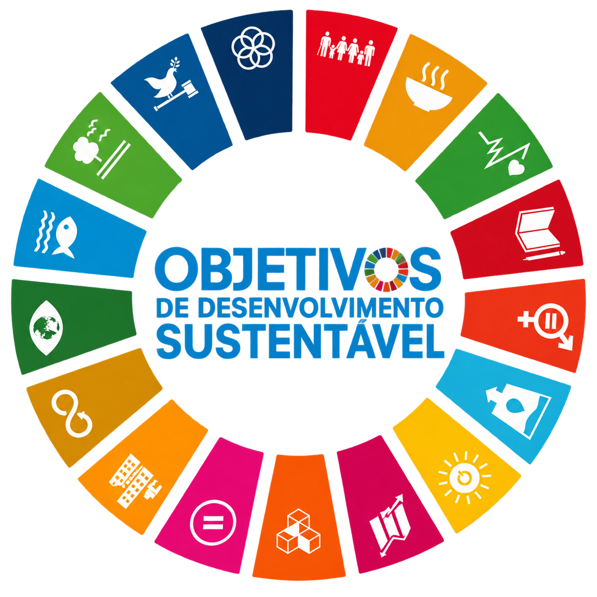

Terra Viva Projeto Natureza Viva
O Objetivo de Desenvolvimento Sustentável 15
busca proteger, restaurar e promover o uso
sustentável dos ecossistemas terrestres.
O Terra Viva apresenta a importância da
biodiversidade, das florestas, dos animais
e dos recursos naturais para o equilíbrio
do nosso planeta.
Preservar a vida terrestre é construir um
futuro mais sustentável para todos.
Proteger a vida terrestre é cuidar do futuro.
A ODS 15 faz parte da Agenda 2030 da Organização das Nações Unidas (ONU) e tem como objetivo proteger, restaurar e promover o uso sustentável dos ecossistemas terrestres.

O que são as ODS
Os Objetivos de Desenvolvimento Sustentável (ODS) fazem parte da Agenda 2030 da Organização das Nações Unidas (ONU). São 17 objetivos criados para enfrentar desafios sociais, ambientais e econômicos presentes em diferentes partes do mundo. Entre os temas estão a redução da pobreza, a educação, a igualdade, a preservação ambiental e o combate às mudanças climáticas. As ODS mostram que o desenvolvimento precisa acontecer de forma responsável, pensando nas pessoas e no planeta.

A importância das ODS
As ODS são importantes porque apresentam metas que incentivam países, empresas, instituições e a sociedade a trabalharem por um futuro mais sustentável. Elas abordam problemas que estão relacionados entre si, como desigualdade, pobreza, degradação ambiental e acesso a recursos básicos. Alcançar esses objetivos depende de ações coletivas e também de atitudes realizadas no dia a dia. Dessa forma, cada pessoa pode contribuir para mudanças positivas na sociedade.

ODS e o futuro do planeta
Construir um futuro sustentável significa encontrar maneiras de atender às necessidades das pessoas sem comprometer os recursos das próximas gerações. As ODS incentivam a preservação da natureza, o uso consciente dos recursos e a busca por melhores condições de vida. Nesse contexto, cuidar do meio ambiente é tão importante quanto promover educação, saúde, igualdade e desenvolvimento. Conhecer as ODS é um primeiro passo para entender como nossas escolhas podem contribuir para um mundo mais equilibrado.
Vida terrestre em foco
Aqui será apresentado o vídeo do projeto NATUREZA VIVA.